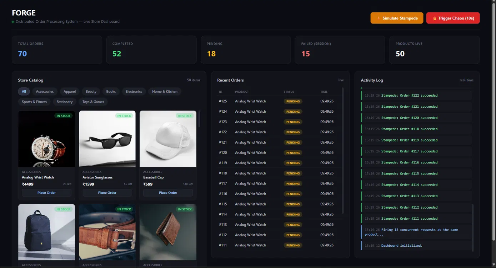

I work on the layer between a request arriving and the right thing happening exactly once — concurrency control, idempotency, caching, message queues and replication.
Three systems, each built to prove a single property end to end and tested against real failure rather than assumed correct. Before those, production video infrastructure on GCP at CDSpace Robotics, where I shipped a live drone-surveillance streaming service and ran object detection on-device at 30+ FPS.
Final year at IIT Gandhinagar, graduating 2027. Looking for backend, infrastructure and platform work — full-time, and six-month internships before then.
Experience
May — Jul 2025
Software Developer Intern · CDSpace Robotics
Shipped a live drone-surveillance video-streaming service to production on GCP, owned from design through deployment, with role-based access control scoping each feed to authorised operators.
Delivered 30+ FPS real-time on-device object detection on Qualcomm RB5 hardware by converting a YOLOv5s model to TFLite, validated against latency targets across 10K+ aerial frames.
Implemented homography-based frame alignment to stabilise shaky aerial footage for field operators.
GCP
Python
TFLite
YOLOv5
OpenCV
Qualcomm RB5
Selected Work

assets/forge.png
Order processing that survives failure
ForgeMar–Jun 26
Built around one question: how do you guarantee non-duplicated, non-lost processing while infrastructure is actively failing? Idempotency is enforced at the database — insert-then-catch on a UNIQUE constraint — rather than in application logic, closing the race window check-then-insert leaves open. Stock safety comes from SELECT FOR UPDATE row locks scoped to the transaction.
Fulfilment is decoupled through Kafka with manual offset commits, so acknowledgement tracks completion rather than receipt. The test suite kills the Postgres primary under load and verifies what survived.
SourceLocal by design — Kafka and replication exceed free-tier hosting
assets/nous.png
Low-latency LLM serving infrastructure
NousJan–May 26
A 73M-parameter Mixture-of-Experts transformer implemented without transformer libraries, and the serving layer around it. Generation runs on a worker-thread pool feeding an asyncio.Queue, which resolved event-loop blocking under FastAPI; a 20 ms batching window merges same-shape requests into a single forward pass.
INT8 dynamic quantization cut the artifact 68% with no latency gain — MoE per-expert matrix multiplications are too small to benefit. The README records that rather than omitting it.
Strategies are written in a purpose-built language — hand-written lexer, recursive-descent parser, AST interpreter — and serialised to JSON so a C++17 engine executes any strategy without strategy-specific code. Both engines were cross-validated trade by trade rather than assumed equivalent.
Look-ahead bias is prevented structurally: a bar is removed from the feed once consumed, making future data unreachable rather than merely un-referenced. A CUSUM change-point detector tracks win-rate drift to flag edge decay before the equity curve shows it.
Ordinary Differential Equations · Control Systems · Mechatronics · Calculus of Several Variables · Probability, Statistics & Data Visualization
Self-directed
Data Structures & Algorithms · Object-Oriented Programming · Operating Systems · Computer Networks · Database Management Systems · Compiler Design · AI & ML Engineering